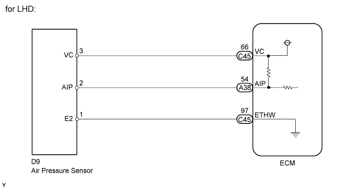
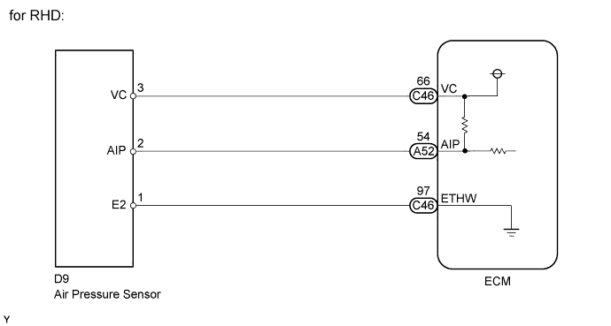
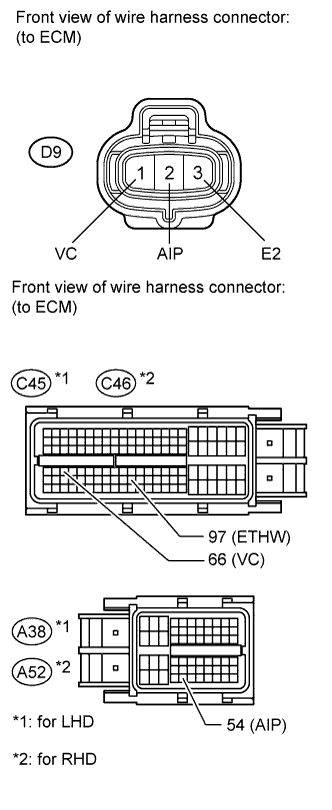
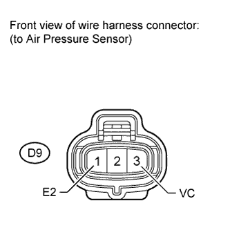

DTC P2431 Secondary Air Injection System Air Flow / Pressure Sensor Circuit Range / Performance Bank1 |
DTC P2432 Secondary Air Injection System Air Flow / Pressure Sensor Circuit Low Bank1 |
DTC P2433 Secondary Air Injection System Air Flow / Pressure Sensor Circuit High Bank1 |

| DTC Code | DTC Detection Condition | Trouble Area |
| P2431 | The pressure sensor indicates below 45 kPa (338 mmHg) or higher than 135 kPa (1013 mmHg) (2 trip detection logic). |
|
| P2432 | The pressure sensor voltage is below 0.1 V (1 trip detection logic). |
|
| P2433 | The pressure sensor voltage is higher than 4.8 V (1 trip detection logic). |
|


| 1.CHECK HARNESS AND CONNECTOR (AIR PRESSURE SENSOR - ECM) |
 |
Disconnect the air pressure sensor connector.
Disconnect the ECM connector.
Measure the resistance according to the value(s) in the table below.
| Tester Connection | Condition | Specified Condition |
| C45-66 (VC) - D9-3 (VC) | Always | Below 1 Ω |
| A38-54 (AIP) - D9-2 (AIP) | Always | Below 1 Ω |
| C45-97 (ETHW) - D9-3 (ETHW) | Always | Below 1 Ω |
| C45-66 (VC) or D9-3 (VC) - body ground | Always | 10 kΩ or higher |
| A38-54 (AIP) or D9-2 (AIP) (EPA) - body ground | Always | 10 kΩ or higher |
| C45-97 (ETHW) or D9-3 (ETHW) - body ground | Always | 10 kΩ or higher |
| Tester Connection | Condition | Specified Condition |
| C46-66 (VC) - D9-3 (VC) | Always | Below 1 Ω |
| A52-54 (AIP) - D9-2 (AIP) | Always | Below 1 Ω |
| C46-97 (ETHW) - D9-3 (ETHW) | Always | Below 1 Ω |
| C46-66 (VC) or D9-3 (VC) - body ground | Always | 10 kΩ or higher |
| A52-54 (AIP) or D9-2 (AIP) (EPA) - body ground | Always | 10 kΩ or higher |
| C46-97 (ETHW) or D9-3 (ETHW) - body ground | Always | 10 kΩ or higher |
|
| ||||
| OK | |
| 2.CHECK HARNESS AND CONNECTOR (VC VOLTAGE) |
 |
Remove the intake manifold (Click here).
Disconnect the air pressure sensor connector.
Measure the voltage according to the value(s) in the table below.
| Tester Connection | Switch Condition | Specified Condition |
| D9-3 (VC) - D9-1 (VC) | Engine switch on (IG) | 4.5 to 5.5 V |
|
| ||||
| OK | |
| 3.REPLACE AIR PRESSURE SENSOR |
Replace the air pressure sensor (Click here).
| NEXT | |
| 4.CHECK WHETHER DTC OUTPUT RECURS |
Connect the intelligent tester to the DLC3.
Turn the engine switch on (IG) and turn the tester on.
Clear DTCs (Click here).
Warm-up the engine.
Enter the following menus: Powertrain / Engine and ECT / Utility / Secondary Air Injection Check (Automatic Mode).
Perform the Active Test and check the pending DTC.
| Result | Proceed to |
| P2430, P2431, P2432, and/or P2433 is output | A |
| No DTC is output | B |
|
| ||||
| OK | ||
| ||